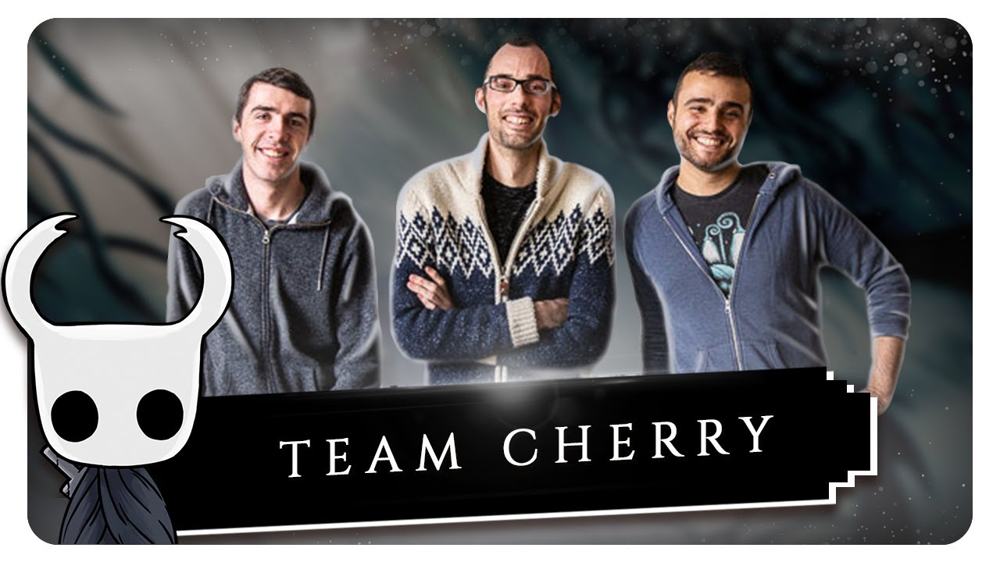

Historia
Criação
A ideia que inspirou a criação de Hollow Knight veio de um game jam, Ludum Dare 2013, no qual dois dos desenvolvedores do jogo, Ari Gibson e William Pellen, desenvolveram um jogo chamado Hungry Knight, no qual o personagem que viria a se tornar o cavaleiro matava insetos para fugir da fome.[2] O jogo, considerado "não muito bom", recebeu nota 1 de 5 no Newgrounds,[2] mas atualmente possui nota 4 de 5.[12] Os desenvolvedores decidiram trabalhar em outra game jam com tema "abaixo da superfície", mas perderam o prazo. Entretanto, o conceito trouxe a ideia de criar um jogo com ambientação subterrânmea, um reino "antigo e profundo", e com personagens insetos.[2]
Influências do jogo incluem Faxanadu, Metroid, Mega Man X, e Zelda II, com o Team Cherry afirmando que queria replicar o senso de maravilha e descobrimento dos jogos de sua infância, onde "podia haver segredos incríveis ou criaturas estranhas".[13]
Acreditanto que o controle do personagem era o mais importante para a diversão do jogador, os desenvolvedores basearam o movimento do cavaleiro em Mega Man X, não dando ao personagem aceleração (ou desaceleração) ao se mover horizontalmente, assim como um grande controle de movimento no ar e a habilidade de interromper um pulo usando um dash.[2] A intenção era fazer o jogador achar que qualquer dano tomado poderia ter sido evitado até o último momento.[2]
Para criar a arte do jogo, os desenhos de Gibson foram usados diretamente no motor do jogo, criando uma "sensação de lugar vívido", e os desenvolvedores decidiram manter o visual simples para prevenir o prolongamento do tempo de desenvolvimento.[2] A complexidade do mundo foi baseada em Metroid, permitindo os jogadores ficarem desorientados e perdidos, focando na diversão em encontrar o caminho certo, e possuindo apenas poucos sinais básicos para direcionar os jogadores para locais importantes.[2] O maior desafio de design foi criar o sistema de mapas e encontrar um equilíbrio entre não entregar os segredos do jogo e não deixar os jogadores completamente às escuras.[2]
Hollow Knight foi revelado no Kickstarter em novembro de 2014, buscando a soma de AU$ 35 mil. O jogo ultrapassou este objetivo, arrecadando mais de AU$ 57 mil.[2] A primeira versão beta foi lançada em setembro de 2015 e a campanha continuou a alcançar vários objetivos, adicionando mais conteúdo e permitindo a mudança de motor de jogo do Stencyl para Unity.[14] Alguns dos conteúdos, como "The Abyss", apesar de não terem sido completamente cobertos pelos fundos da campanha, ainda conseguiram ser inseridos no jogo de maneira reduzida.[15]
História do jogo
Hollow Knight conta a historia de um diminuto guerreiro que decide entrar nas cavernas que abrigam as ruínas do reino de Hallownest. Devido à uma infestação que roubou os insetos de sua inteligência e os reverteu aos seus instintos primitivos, uma grande e próspera nação se tornou apenas resquício do que era. Omundo abaixo da superfície é gigantesco para os padrões do gênero — e não a custo de qualidade.

Mecânica
Cada um dos diversos biomas de Hallownest contam com múltiplas camadas de profundidades e detalhes no ambiente que, além de lindas, servem para desenvolver as tragédias pelas quais o reino passou. Tais detalhes podem ser um lago gigantesco situado logo acima da Cidade das Lágrimas, explicando de onde provém a sua chuva eterna; ou dezenas de criaturas empaladas por lanças das tribos dos Louva-a-Deus, demonstrando a função da tribo, protegendo o resto de Hallownest dos aracnídeos do Ninho Profundo. Seja o que for, nada no cenário está lá simplesmente por estar.
O reino subterrâneo que o jogador explora não somente é vasto na historia que conta e em sua caracterização, mas também na forma em que pode ser explorado. Não tão diferente de The Legend of Zelda: Breath of the Wild, após explorar algumas das áreas iniciais, o jogador pode seguir em múltiplas direções.
Assim como em outros jogos do gênero, eventualmente você encontrará obstáculos que claramente só podem ser superados caso possua uma habilidade específica, forçando o jogador a encontrar outra rota e marcar no mapa o local para retornar mais tarde. Isto é, caso o jogador tenha um mapa.
Hollow Knight não hesita em promover uma sensação de estar perdido e isolado neste lugar inóspito. Sendo assim, até encontrar Cornifer, um inseto cartógrafo e comprar dele o (incompleto) mapa do local será impossível mapear o local. Quer saber aonde você se encontra dentro desse mapa? Não se esqueça de comprar e equipar a bússola.
Enquanto nos primeiros locais, especialmente a Encruzilhada Esquecida, isso pode causar uma certa frustração, tal mecânica acaba sendo essencial para criar a atmosfera tensa que permeia a campanha. Não há apreensão maior do que perceber que você está há trinta minutos explorando uma área nova, sem encontrar um banco (que funciona como save point) e finalmente começa a encontrar as páginas espalhadas e o assobio indicativo de que Cornifer está por perto.
Apesar da facilidade de se perder nesse labirinto subterrâneo, aos poucos o jogador também começa a compreender o seu design, entender sua simbologia e o significado de placas ao redor, facilitando navegar o emaranhado que Hallownest é. Sejam as placas de navegação ou uma luz brilhante vindo da entrada da área que abriga um ponto de interesse, Hollow Knight faz com que o jogador sempre se sinta perdido sem de fato o estar.
A variedade e surpresa não se limitam aos biomas, mas também aos inimigos. Sim, é possível separá-los em quatro categorias base (ataques com disparo, dano em contato, explosivo-suicidas e espadachins), mas as variações de como tais comandos são realizados, além das suas caracterizações, ajudam a criar um misto de expectativa sobre qual inseto será encontrado e medo de como o combate se dará — principalmente quando tudo indica que o embate em questão é contra um chefe.